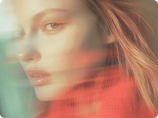
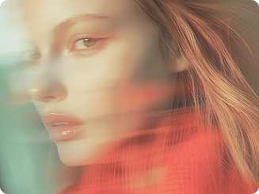

Вы когда‑нибудь задумывались, почему вас так сильно привлекает определённый цвет, а другой вызывает отторжение? Ваши любимые оттенки в одежде, интерьере и даже еде — это не случайный выбор, а отражение вашего внутреннего мира, вашей личности и ваших потребностей. «Цветовой портрет» – это увлекательный инструмент самопознания, который поможет вам разгадать тайны ваших предпочтений и использовать силу цвета для достижения гармонии и успеха.
Что такое цветовой портрет?
Цветовой портрет — это анализ ваших любимых и нелюбимых цветов, который позволяет выявить ваши сильные и слабые стороны, мотивации, страхи и таланты. Каждый цвет ассоциируется с определёнными чертами характера, эмоциями и психологическими состояниями. Анализируя ваши предпочтения, можно получить ценную информацию о вашей личности, которая поможет вам лучше понять себя и окружающих.
 


комментарии
0